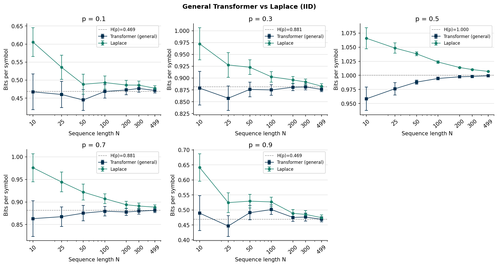
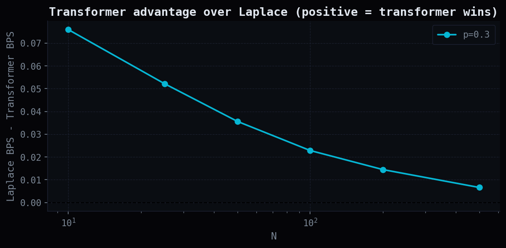
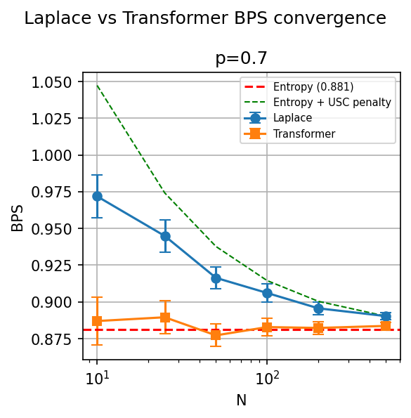
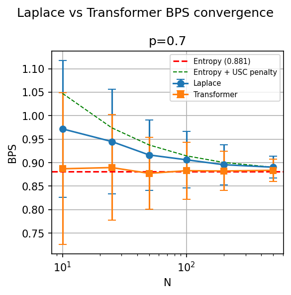
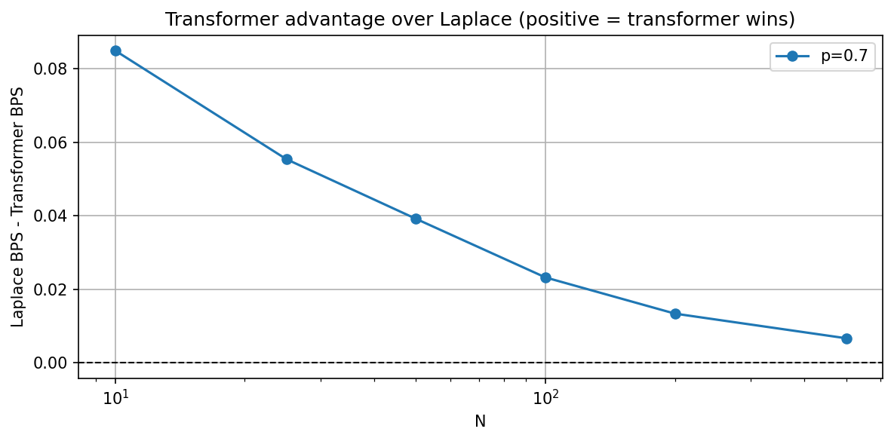
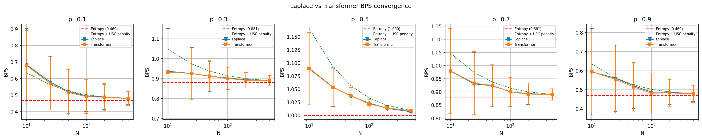
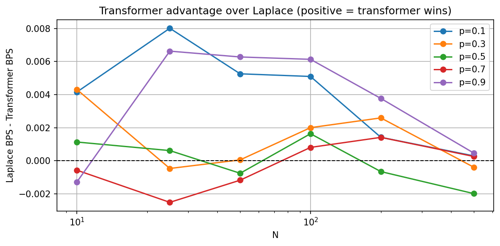

import numpy as np
import matplotlib.pyplot as plt
from math import comb
from itertools import combinations
def convert_sample_to_pmf(sample):
values, counts = np.unique(sample, return_counts=True)
probs = counts / counts.sum()
return dict(zip(values, probs))
def clean_pmf(pmf):
return {k: v for k, v in pmf.items() if v > 0.0}
def generate_bin_pmf():
p = np.random.rand()
return {0: p, 1: 1 - p}
def iid_generate(p_dict, N):
return np.random.choice([0, 1], size=N, p=[p_dict[0], p_dict[1]])
def entropy_calc(pmf):
pmf = clean_pmf(pmf)
pmf_array = np.asarray(list(pmf.values()))
return -np.sum(pmf_array * np.log2(pmf_array))Transformer-Based Universal Source Coding
research
information-theory
transformers
compression
Building a toolkit to benchmark minGPT against Laplace estimation for universal source coding on binary IID sequences.
Active research notebook. Things are still getting cleaned up and results are still coming in. Documenting the toolkit and experimental pipeline as it gets built.
The central question: can a small transformer trained offline on IID binary sequences produce better probability estimates than a Laplace estimator, particularly at small sequence lengths where Laplace is known to be slow to converge?
1 Motivation
Universal source coding is the problem of compressing a sequence from an unknown source. The classical approach is to estimate symbol probabilities sequentially from the data and encode using arithmetic coding. The Laplace estimator does this as follows: after observing \(k\) ones in \(n\) symbols, it assigns \(\hat{p}_1 = \frac{k+1}{n+2}\).
The limitation is that at small \(n\), this estimate is noisy and the BPS overhead above the entropy rate is non-trivial. The theoretical overhead for sequential universal source coding scales as \(\frac{1}{2} \frac{\log N}{N}\) bits per symbol, fine asymptotically, not great at \(N = 10\).
The hypothesis is that a transformer trained on IID binary sequences with uniformly sampled \(p\) has implicitly learned the Bayes-optimal predictor over this mixture. At inference time it can amortize its “warm-up” cost across training sequences and produce tighter probability estimates from the first few symbols, even on IID data with no temporal structure to exploit.
2 Information Theory Primitives
Before getting into the compression experiments, the toolkit builds up the core information-theoretic functions from scratch. These serve as both a sanity check and as the measurement infrastructure for the compression benchmarks.
2.1 KL Divergence
KL divergence \(D_{KL}(p \| q) = \sum_x p(x) \log \frac{p(x)}{q(x)}\) measures how many extra bits are spent encoding a source with true distribution \(p\) using a code designed for \(q\). It shows up directly in the compression overhead of the Laplace estimator, the BPS excess above entropy is \(D_{KL}(\hat{p} \| p)\) evaluated at the estimated distribution.
The plot below shows \(D_{KL}(\text{Bern}(p) \| \text{Bern}(0.5))\) as a function of \(p\). It is zero at \(p=0.5\) (the uniform prior matches the source exactly) and blows up near the extremes.
# KL divergence of Bernoulli(p) vs Bernoulli(0.5)
3 Sequential Universal Source Coding
The core compression metric is bits-per-symbol (BPS) under arithmetic coding. Given a sequence \(x_1, ..., x_N\) and a corresponding probability array \(p_1, ..., p_N\) (where \(p_i\) is the estimated probability that \(x_i = 1\) before observing it), the code length is:
\[\text{BPS} = -\frac{1}{N} \sum_{i=1}^{N} \log_2 p(x_i)\]
For the Laplace estimator, \(p_i\) is updated after each observed symbol. For the transformer, \(p_i\) comes from the model’s output softmax given the preceding context. Both schemes are evaluated on the same sequence, the entropy rate \(H(p)\) is the lower bound for both.
def sequential_universal_source_coding(sequence, p_array=None):
"""
Compute expected BPS under arithmetic coding.
If p_array is None, use the Laplace estimator sequentially.
"""
n0, n1 = 0, 0
total_bits = 0.0
for i, x in enumerate(sequence):
if p_array is not None:
p1 = p_array[i]
else:
# Laplace estimate
p1 = (n1 + 1) / (n0 + n1 + 2)
p1 = np.clip(p1, 1e-10, 1 - 1e-10)
p0 = 1 - p1
if x == 1:
total_bits += -np.log2(p1)
n1 += 1
else:
total_bits += -np.log2(p0)
n0 += 1
return total_bits / len(sequence)4 Baseline: Laplace Estimator Convergence
Before introducing the transformer, we characterize how the Laplace estimator converges across sequence lengths at \(p=0.7\). 100 trials per \(N\) value.
# Laplace estimator BPS convergence (p=0.7)
The Laplace estimator converges reliably but the variance at \(N=10\) is large. The mean is already pretty close by \(N=100\) but the confidence interval still spans roughly 0.1 bits.
We also compare against the Csiszar-Korner block estimator as a secondary baseline. The CK estimator processes the sequence in non-overlapping blocks and estimates \(p\) within each block. With block size 10, it plateaus significantly above entropy even at large \(N\), the block boundaries introduce a hard floor on performance.
# Laplace vs Csiszar-Korner convergence comparison (p=0.7)
The CK estimator is clearly worse here, it never converges to entropy in this regime. Laplace wins and is the baseline the transformer needs to beat.
5 The Model: minGPT
The transformer used here is minGPT (Karpathy), the gpt-nano configuration: 3 layers, 3 attention heads, embedding dimension 48. About 90K parameters total.
Training data: IID binary sequences of length 100, where each sequence is drawn from \(\text{Bern}(p)\) with \(p \sim \text{Uniform}(0,1)\) sampled fresh per sequence. Training task is standard next-token prediction.
The idea is that at inference time, given the prefix of a new sequence, the model implicitly estimates \(p\) from context and outputs a calibrated next-symbol probability. This gets fed directly into the arithmetic coder in place of the Laplace estimate.
import torch
import torch.nn.functional as F
from torch.utils.data import Dataset
from mingpt.model import GPT
from mingpt.trainer import Trainer
class IID(Dataset):
"""IID binary sequences with uniformly sampled p."""
def __init__(self, n=10, num_samples=10000):
self.n = n
self.num_samples = num_samples
def _sample(self):
p = torch.rand(1).item()
seq = torch.bernoulli(torch.full((self.n,), p)).long()
return seq[:-1].clone(), seq[1:].clone()
def get_block_size(self):
return self.n - 1
def __getitem__(self, idx):
return self._sample()
def __len__(self):
return self.num_samples
dataset = IID(n=100, num_samples=10000)
model_config = GPT.get_default_config()
model_config.model_type = 'gpt-nano'
model_config.vocab_size = 2
model_config.block_size = dataset.get_block_size()
model = GPT(model_config)
# Training, already run, weights saved
# train_config = Trainer.get_default_config()
# train_config.learning_rate = 1e-4
# train_config.max_iters = 100000
# train_config.num_workers = 0
# trainer = Trainer(train_config, model, dataset)
# trainer.run()
# torch.save(model.state_dict(), 'iid_model.pt')
model.load_state_dict(torch.load('iid_model.pt'))
model.eval()6 Inference: Windowed Probability Arrays
For a sequence of length \(N\), we need \(P(x_i = 1 \mid x_1, ..., x_{i-1})\) at each position. We use a sliding window: at position \(i\), feed the model the last block_size tokens and take the output logit at the final position. First bit gets a flat 0.5 prior.
def transformer_p_array_windowed_fast(sequence, model, device='cpu'):
model.eval()
B = model.block_size
T = len(sequence)
p_array = [0.5] # uniform prior for first bit, no context
seq_tensor = torch.tensor(sequence, dtype=torch.long, device=device)
with torch.no_grad():
for i in range(1, T):
start = max(0, i - B)
context = seq_tensor[start:i].unsqueeze(0)
logits, _ = model(context)
next_token_logits = logits[0, -1, :]
probs = F.softmax(next_token_logits, dim=-1)
p_array.append(probs[1].item())
return p_array7 Results: p=0.7 Pilot
Initial experiment at a single \(p=0.7\), sweeping \(N \in \{10, 25, 50, 100, 200, 500\}\) with 100 trials each. The transformer is loaded from the saved checkpoint and run on CPU for reproducibility.
# Laplace vs Transformer BPS convergence (p=0.7)
The transformer tracks at or below Laplace across all \(N\) values tested. The error bars are large at small \(N\), this is just variance in the sequences themselves. The gap plot shows the signal more cleanly.
# Transformer advantage over Laplace (p=0.7)
The transformer advantage is strongest at \(N=10\) (~0.085 bits) and decreases monotonically as \(N\) grows, converging toward zero as Laplace catches up. This is exactly the expected pattern, the transformer’s learned prior matters most when there is almost no data to estimate from.
8 Results: Full p Sweep
Running the same experiment across \(p \in \{0.1, 0.3, 0.5, 0.7, 0.9\}\). The \(p=0.7\) result ” “above used sequences with random \(p\) during training, this run uses fixed \(p\) per trial.
# Laplace vs Transformer BPS convergence (all p values)
# Transformer advantage over Laplace (all p values)
The full sweep tells a more complicated story than the \(p=0.7\) pilot. The gap is noisy and in some cases negative, the transformer occasionally does slightly worse than Laplace, particularly at \(p=0.5\) and \(p=0.7\) at larger \(N\). The \(p=0.1\) and \(p=0.9\) cases show the clearest positive gap.
A few things to unpack here:
The symmetric \(p=0.5\) case is the hardest for the transformer because there is no \(p\) to infer, every sequence looks the same. The Laplace estimator’s uniform 0.5 prior is already optimal.
The \(p=0.1\) and \(p=0.9\) cases show the strongest advantage because skewed sequences give the model a fast signal about \(p\) even in the first few symbols, while Laplace is still mixing in a symmetric prior.
The negative gaps are small enough (around 0.002 bits) that they are likely within noise, but this needs more trials to confirm.
9 Next steps
- Increase the trial count and sequence length
- Train separate models using different probability clusters
- Scale up model size
- make big bucks